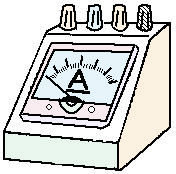
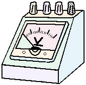
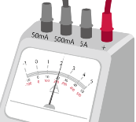
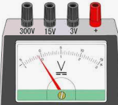

電気の流れを電流といい、単位は「アンペア」、記号はAを使います。
電流を流そうとする力を電圧といい、単位は「ボルト」、記号はVです。
導線の太さや長さ、材質によって、電流の流れにくさが生じます。電流の流れにくさを抵抗といい、単位は「オーム」、記号はΩです。
| 量 | 単位 | 記号 |
|---|---|---|
| 電流 | アンペア | A |
| 電圧 | ボルト | V |
| 抵抗 | オーム | Ω |
1Vの電圧をかけると1A流れるような回路の抵抗は1Ωです。
- 電流……電気の流れ。単位はアンペア(A)
- 電圧……電流を流そうとする力。単位はボルト(V)
- 抵抗……電流の流れにくさ。単位はオーム(Ω)
- 1Vの電圧で1A流れる回路の抵抗は1Ω
🏆 ベストタイム


電流計は、電気の流れる量(電流)をはかる装置です。回路に直列につなぎます。
電流計の内部の抵抗は0に近いので、並列につなぐと大きな電流が流れてしまいます。注意しましょう。
電圧計は、電圧の大きさをはかる装置です。抵抗や電池に並列につなぎます。
電圧計は内部に大きな抵抗をもつので、直列につなぐと回路に電流が流れなくなります。
- 電流計……回路に直列につなぐ(内部の抵抗が0に近いので、並列は危険)
- 電圧計……抵抗や電池に並列につなぐ(内部の抵抗が大きいので、直列にすると電流が流れない)
🏆 ベストタイム
電流計・電圧計には極性があります。電池の＋極側の導線は＋端子に、−極側の導線は−端子につなぎます。逆につなぐと針が反対にふれ、こわれることがあります。
どちらの端子につなぐかは、電池の＋極(長い線)から回路にそってたどって決めます。電池の＋極に近い側が＋端子、−極に近い側が−端子です。
どれだけの電圧・電流が流れるかわからないときは、針が振り切れてこわれないように、いちばん大きい端子からつなぎます。電圧計なら300V端子、電流計なら5A端子です。


- 電池の＋極に近い側は＋端子、−極に近い側は−端子につなぐ
- 逆につなぐと、針が反対にふれてこわれることがある
- 予想できないときは、いちばん大きい端子(電圧計は300V、電流計は5A)から
🏆 ベストタイム
電流・電圧の小さい値は、mA(ミリアンペア)・mV(ミリボルト)で表すことがあります。\(1\,\mathrm{mA}=\dfrac{1}{1000}\,\mathrm{A}\)、\(1\,\mathrm{mV}=\dfrac{1}{1000}\,\mathrm{V}\)です。mV→V、mA→Aに直すときは、1000で割ります。
【例】500mV＝500÷1000＝0.5V ／ 125mA＝125÷1000＝0.125A ／ 50mV＝50÷1000＝0.05V
目盛りは、使っている端子に合った目盛りを読みます。最小の目盛りの10分の1まで目分量で読みとります。
【例1】15V端子を使うと、最小の目盛りは(15−10)÷10＝0.5Vです。下の図の針が示す値は6.50Vです。
【例2】3V端子を使うと、最小の目盛りは(3−2)÷10＝0.1Vです。下の図の針が示す値は1.30Vです。
- mA→A、mV→V……1000で割る(250mA＝0.25A)
- 使っている端子に合った目盛りを読む
- 最小の目盛りの10分の1まで目分量で読む(15V端子は0.5Vごと、3V端子は0.1Vごと)